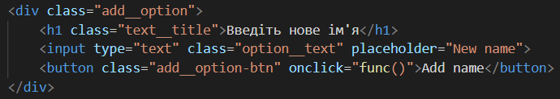

Подія – це сигнал від браузера у тому, що щось сталося. Всі DOM-вузли подають такі сигнали (хоча події бувають не тільки в DOM).
Події миші:
- click – відбувається, коли клацнули на елемент лівою кнопкою миші (на пристроях із сенсорними екранами воно відбувається при торканні).
- contextmenu – відбувається, коли клацнули на елемент правою кнопкою миші.
- mouseover / mouseout – коли миша наводиться на / залишає елемент.
- mousedown/mouseup – коли натиснули/віджали кнопку миші на елементі.
- mousemove – під час руху миші.